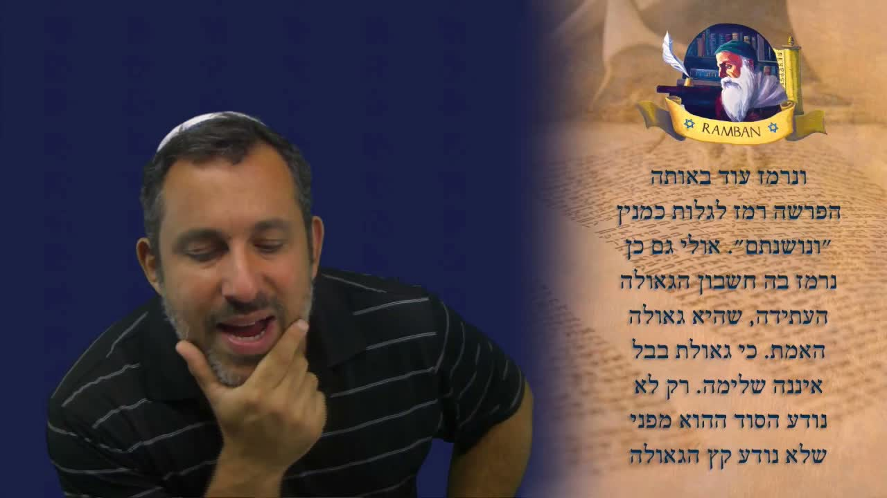

妥拉與救贖 The Torah and the Geulah
拉姆班 (Ramban) 在《救贖之書》(Sefer HaGeulah) 中繼續追問：妥拉究竟是不是一本「預言書」？神能不能改變一個預言？藉著申命記 4:25、拉什 (Rashi) 對 v'noshantem 的 852 與 850 之謎，沙皮拉拉比帶我們看見一個震撼的真理——連預言都是有條件的，而真正的救贖仍在前頭。 In Sefer HaGeulah, the Ramban presses the question further: Is the Torah really a “book of prophecy”? Can God change a prophecy once spoken? Through Deuteronomy 4:25 and Rashi's riddle of the 852 versus 850 years hidden in v'noshantem, Rabbi Shapira uncovers a startling truth — even prophecy is conditional, and the true redemption is still ahead of us.
在《救贖之書》(סֵפֶר הַגְּאוּלָה Sefer HaGeulah) 的這一課裡，拉姆班 (רַמְבַּ"ן Ramban) 繼續追問一個看似簡單卻極深的問題：我們應當如何看待妥拉 (תּוֹרָה Torah)？他先前說過，妥拉「不是一本預言書」；但他又承認，妥拉裡確實藏著預言的價值。這兩句話如何並存？拉姆班的答案是：妥拉滿了預言——但那些預言像是「在一片無垠的田裡尋找一根極小的稻草」，除非救贖真正臨到我們，否則我們不知道自己在找什麼。而在這趟尋找之中，他向我們揭示了一個震撼的真理：連神的預言，都不是僵死不變的鐵律。 In this lesson of the Sefer HaGeulah (סֵפֶר הַגְּאוּלָה, “The Book of Redemption”), the Ramban (רַמְבַּ"ן) keeps pressing a deceptively simple question: how are we to look upon the Torah (תּוֹרָה)? Earlier he had said the Torah is “not a book of prophecy.” Yet he also conceded that the Torah does carry prophetic value within it. How do both hold at once? His answer: the Torah is full of prophecy — but those prophecies are like “a tiny straw in a giant field,” and until the redemption itself comes upon us, we do not know what we are looking for. Along the way he reveals something startling: even God's prophecy is not a frozen, unchangeable decree.
一、妥拉究竟是不是「預言書」？I. Is the Torah a “Book of Prophecy” or Not?
拉姆班在這個系列裡反覆糾正一個常見的誤解。他不否認妥拉裡有預言；他否認的是，把妥拉只當成一本預言書來讀。換句話說，妥拉首要是神與祂百姓所立的約、是生命的教導，預言只是其中被編織進去的一層。拉姆班自己最為人所知的，正是用 Pardes（פַּרְדֵּס，四層解經法）的方法，特別在妥拉裡尋找彌賽亞 (מָשִׁיחַ Mashiach) 的連結。 Across this series the Ramban keeps correcting a common misreading. He does not deny that prophecy exists in the Torah; what he denies is reading the Torah as merely a book of prophecy. The Torah is first and foremost God's covenant with His people and a teaching for life — prophecy is one layer woven into it. The Ramban himself is famous precisely for using the method of Pardes (פַּרְדֵּס, the four-fold reading of Scripture), especially in the Torah, to find Messianic connections.
所以在《救贖之書》裡，拉姆班是慢慢地向我們打開這扇門：他要教我們用一種怎樣的「預言的眼光」去讀妥拉——既不抽空妥拉裡真實的預言價值，也不把妥拉貶低成一本「占卜手冊」。 So in the Sefer HaGeulah the Ramban opens this door slowly: he wants to teach us what kind of prophetic gaze to bring to the Torah — one that neither empties the Torah of its real prophetic value nor reduces it to a “fortune-telling manual.”
二、申命記 4:25 ── 正面與負面的兩種預言II. Deuteronomy 4:25 — The Positive and the Negative Prophecy
上一課，拉姆班用申命記 4:25 作為「妥拉裡確有預言」的例子。經文說：「你們在那地住久了，生子生孫，行為敗壞，就雕刻偶像，彷彿甚麼形像，行耶和華你神眼中看為惡的事，惹祂發怒。」請注意：這節經文裡同時藏著一個正面的預言和一個負面的預言。 In the previous lesson the Ramban used Deuteronomy 4:25 as his example that the Torah truly contains prophecy. The verse reads: “When you father children and grandchildren and have grown old in the land, and you act corruptly and make a carved image of anything, and do what is evil in the sight of the LORD your God, provoking Him to anger.” Notice: this single verse holds both a positive prophecy and a negative one at the same time.
拉姆班的關鍵觀察是：經文並沒有用「如果」來引出正面的部分（你們將生子生孫、在地上住久）。也就是說，那正面的應許是必定要成就的；而那負面的部分（敗壞、拜偶像、招致審判）——是否成就，卻取決於我們自己的行為。預言不是命定的劇本，而是與人的行動緊密相連。 The Ramban's key observation: the verse does not say “if” for the positive part (that you will father children and grandchildren and grow old in the land). That positive promise is certain to be fulfilled; but the negative part — corruption, idolatry, the judgment it brings — is fulfilled only by our own actions. Prophecy is not a fixed screenplay; it is bound up with human deeds.
三、藏在 v'noshantem 一字裡的線索III. The Clue Hidden in V'noshantem
拉姆班接著說：「在同一段（妥拉的 v'etchanen 段）裡，還有另一個線索 (רֶמֶז remez)。」他提醒我們，線索既藏在 p'shat（פְּשָׁט，字面義）裡，也藏在 remez（暗示層）裡。這一次的線索，在於一個字——v'noshantem（וְנוֹשַׁנְתֶּם，「你們住久了／年深日久」）。 The Ramban continues: “In that same portion (the Torah portion of v'etchanen) there is yet another clue (רֶמֶז remez).” He reminds us that clues lie both in the p'shat (פְּשָׁט, the plain sense) and in the remez (the hint-layer). This time the clue is a single word — v'noshantem (וְנוֹשַׁנְתֶּם, “and you have grown old / long established”).
拉姆班指出，這個字裡藏著一個關於流亡 (גָּלוּת galut) 何時開始的線索——即巴比倫之擄；而他更大膽地補上一句：「ואולי גם כן נרמז בחשבון הגאולה עתידה」——也許這甚至也暗示著將來的救贖 (גְּאוּלָה geulah)，就是『真正的救贖』(גְּאוּלַת הָאֱמֶת geulat ha'emet)。」這是一個極重的宣告。 The Ramban points out that this word hides a clue to when the exile (גָּלוּת galut) would begin — the Babylonian captivity; and then he boldly adds: “ve'ulai gam ken nirmaz be'cheshbon ha'geulah atidah” — perhaps it even hints at the future redemption (גְּאוּלָה geulah), which is the true redemption (גְּאוּלַת הָאֱמֶת geulat ha'emet).” This is a weighty claim.
因為他在這裡其實是說：從巴比倫之擄的歸回，並不是真正的救贖。按拉姆班的看法，我們仍在流亡之中；我們尚未經歷那真正的 geulah。 For here he is in effect saying: the return from the Babylonian exile is not the real redemption. According to the Ramban, we are still in galut; we have not yet experienced the true geulah.
「巴比倫的救贖並不完全。今天世上每一個猶太人都需要彌賽亞——這就是拉姆班的重點。我們仍在一場屬靈的流亡之中。」——拉姆班《救贖之書》要旨（沙皮拉拉比釋讀） “The redemption of Babel is not complete. Every Jew in the world today needs Mashiach — that is his point. We are still in a spiritual exile.”— Gist of the Ramban's Sefer HaGeulah (as read by Rabbi Shapira)
四、拉什的謎題 ── 852 與 850IV. Rashi's Riddle — 852 Versus 850
那麼，這個線索的「鑰匙」在哪裡？拉姆班把我們指向拉什 (רַשִׁ"י Rashi)。拉什在註解 v'noshantem 這個字時說：這裡有一個 remez，暗示以色列將從那地被擄八百五十二年。為甚麼是 852？因為 noshantem 一字在 gematria（גִּימַטְרִיָּה，字母數值）裡的總和，正好是 852。 So where is the “key” to this clue? The Ramban points us to Rashi (רַשִׁ"י). Commenting on the word v'noshantem, Rashi says there is a remez here that Israel would be exiled from the land for 852 years. Why 852? Because the numerical value of noshantem in gematria (גִּימַטְרִיָּה, the value of the Hebrew letters) is exactly 852.
但歷史卻不同意——實際的流亡是八百五十年，比那個數字早了整整兩年。拉什如何解開這個矛盾？他說：神故意提早了兩年，「以致那關於他們『必全然滅絕』的預言不致應驗」。因為這段經文後面接著的，正是「你們必速速滅盡」的可怕審判。 But history disagrees — the actual exile lasted 850 years, fully two years earlier than that number. How does Rashi resolve it? He says: God deliberately hastened it by two years, “so that the prophecy concerning them — that they would utterly perish — should not be fulfilled.” For the very next words of the passage are the terrible judgment that “you will utterly perish.”
拉什引用經文作結：「耶和華速速降災 (וַיְמַהֵר)，把它臨到我們身上……耶和華我們的神是公義的 (צַדִּיק)」——祂是恩慈的，因為祂「催速」了流亡，使它提早兩年來到，好讓那毀滅性的負面預言不致成全。神「催速」一個較輕的災，是為了攔阻一個致命的災。 Rashi seals it with the verse: “And the LORD hastened (וַיְמַהֵר) the evil and brought it upon us… and the LORD our God is righteous (צַדִּיק)” — He was gracious, because He “hastened” the exile to come two years early, so that the destructive negative prophecy would not be fulfilled. God “hastened” a lighter calamity in order to prevent a fatal one.
五、預言是有條件的 ── 神能改變一個負面的預言V. Prophecy Is Conditional — God Can Change a Negative Decree
這把我們帶到今天最重要的一課。拉什的結論不只是一道算術題，而是一個神學原則：一個負面的預言 (נְבוּאָה רָעָה nevuah ra'ah)，按妥拉的教導，並不一定要應驗。單單因為你看見一個預言、一個 nevuah，並不代表它非成就不可——尤其當那是一個壞的、審判性的預言時。 This brings us to the most important lesson of the day. Rashi's conclusion is not merely arithmetic; it is a theological principle: a negative prophecy (נְבוּאָה רָעָה nevuah ra'ah), according to the Torah, does not have to be fulfilled. Simply because you see a prophecy, a nevuah, does not mean it must come to pass — especially when it is a bad, judgmental one.
這不是說神的話不真。拉什恰恰是在解釋「摩西的話怎能不算數」這個難題——而他的答案是：神並沒有食言；神行了一件更恩慈的事，祂改變了時間 (זְמַן zman)、改變了季節，使那致命的話不致臨到。我們常以為預言是死板、不流動的；但拉姆班與拉什在這裡指出：神能催速、也能延緩；祂能加快、也能拖慢——而這一切，都繫於我們的行為。 This does not make God's word untrue. Rashi is precisely resolving the difficulty of “how can the words of Moses fail to come true” — and his answer is that God did not break His word; God did something more gracious: He changed the time (זְמַן zman), changed the season, so the fatal word would not land. We tend to think prophecy is rigid and unmoving; but here the Ramban and Rashi show: God can hasten and He can slow; He can accelerate and He can delay — and all of it turns on our deeds.
這正是 teshuvah（תְּשׁוּבָה，悔改／歸回）的能力：我們的行動、我們的悔改，能延遲、甚至改變一道審判的命令 (גְּזֵרָה gezerah)。整本聖經都見證這個原則——神曾一次又一次地，按祂百姓的工作而催速或延緩。 This is the power of teshuvah (תְּשׁוּבָה, repentance / return): our actions, our repentance, can delay and even change a decree of judgment (גְּזֵרָה gezerah). The whole of Scripture testifies to this principle — again and again God has hastened or slowed, in response to the work of His people.
六、一根稻草在無垠的田裡 ── 我們不知道自己在找甚麼VI. A Straw in an Endless Field — We Don't Know What We're Looking For
拉姆班接著坦白一個極謙卑的觀點。他說：是的，妥拉裡滿了預言；是的，gematria 是有效的工具（他應許在後面的課裡會詳細處理「哪些 gematria 合宜、哪些不合宜」）。但他補上一個關鍵的限制：「רַק לֹא נוֹדַע הַסּוֹד」——只是那奧祕 (סוֹד sod) 還沒有被認出，那盡頭的時刻 (קֵץ ketz) 仍未被知曉。」 The Ramban then makes a strikingly humble admission. Yes, he says, the Torah is full of prophecy; yes, gematria is a valid tool (he promises to deal at length in later lessons with which gematrias are “kosher” and which are not). But he adds a crucial limit: “rak lo noda ha'sod” — only the secret (סוֹד sod) has not yet been recognized, the appointed end (קֵץ ketz) is not yet known.”
他用一個鮮明的比喻：整本神的話都是預言、預言、預言——但要在其中找出那關於 geulah 的特定線索，就像在一片無垠的田裡尋找一根極小的稻草。問題不在於妥拉裡沒有預言，而在於：我們不知道自己在找甚麼。除非那線索真的應驗、真的攤在我們面前，否則我們認不出它。 He paints a vivid picture: the entire word of God is prophecy upon prophecy upon prophecy — but to find the particular clue about the geulah within it is like searching for a tiny straw in a giant field. The problem is not that the Torah lacks prophecy; it is that we do not know what we are looking for. Until the clue actually comes to pass, until it is staring us in the face, we cannot recognize it.
所以拉姆班說：「當救贖臨到我們 (וּבְבוֹא הַגְּאוּלָה אֵלֵינוּ) 的時候」——那時，所有的奧祕、所有的 gematria、一切的一切，才會被揭開。換句話說：是的，gematria 是好的；是的，妥拉裡有預言；但如果你不知道自己在找甚麼，你就找不到，因為它還沒有清清楚楚地擺在你眼前。 So the Ramban says: “when the geulah comes upon us (וּבְבוֹא הַגְּאוּלָה אֵלֵינוּ)” — then all the secrets, all the gematrias, everything will be revealed. In other words: yes, gematria is good; yes, there is prophecy in the Torah; but if you do not know what you are looking for, you will not find it, because it is not yet staring you in the face.
七、尋找彌賽亞 ── 拉比的挑戰與我們的回應VII. Look for the Mashiach — The Rabbi's Challenge and Our Reply
在這裡，沙皮拉拉比加上了他自己對拉姆班的挑戰。他說，也許拉姆班沒有把這個原則推得夠遠：如果妥拉真的滿了預言，而我們的難處只是「不知道自己在找甚麼」——那麼，我們就當去尋找彌賽亞。如果我們藉著妥拉的預言 (נְבוּאָה nevuah) 去尋找 Mashiach，我們必尋見 Mashiach。我們只是必須去找祂。 Here Rabbi Shapira adds his own challenge to the Ramban. Perhaps, he suggests, the Ramban did not take the principle far enough: if the Torah truly is full of prophecy, and our only problem is that we “don't know what we're looking for,” then we ought to look for the Mashiach. If we search for the Mashiach through the prophecy (נְבוּאָה nevuah) of the Torah, we will find the Mashiach. We simply have to look for Him.
這就是今天這一課的「底線」：是的，妥拉裡有預言（這裡 v'noshantem 就是一例）；神催速了它，好讓以色列不致承受那毀滅性的負面預言；負面預言不一定要應驗；而我們必須主動去尋找這些預言，並且明白——我們的行動、像 teshuvah 這樣的悔改，能延遲、甚至改變一道災難的命令。 This is the “bottom line” of today's lesson: yes, there is prophecy in the Torah (v'noshantem here is one example); God hastened it so that Israel would not receive the destructive negative prophecy; a negative prophecy does not have to be fulfilled; and we must actively look for these prophecies, understanding that our actions — a teshuvah, a repentance — can delay and even change a decree of calamity.
對華人信徒而言，這一課有兩層極實際的安慰。第一，歷史不是命定的鐵軌：當你看見可怕的「末世新聞」時，禱告與悔改有真實的份量，能改變走向——這正是約拿在尼尼微所經歷的。第二，真正的救贖仍在前頭：拉姆班提醒我們不要把任何一次部分的歸回，誤當成終局；那位「真正救贖」(geulat ha'emet) 的彌賽亞王，仍要回來。 For Chinese believers this lesson carries two very practical comforts. First, history is not a fixed railway track: when you see frightening “end-times news,” prayer and repentance carry real weight and can change the trajectory — exactly what Jonah witnessed in Nineveh. Second, the true redemption is still ahead: the Ramban warns us never to mistake any partial return for the finale; the Messianic King of the “true redemption” (geulat ha'emet) is still to come.
八、結語 ── 真正的救贖仍要臨到VIII. Closing — The True Redemption Is Still to Come
「神能更改時間，也能更改季節。妥拉滿了預言——但若你不知道自己在找甚麼，就找不到。所以去尋找彌賽亞 (מָשִׁיחַ)。負面的預言不必應驗；你的悔改 (תְּשׁוּבָה) 能改變一道命令。預備你自己——真正的救贖 (גְּאוּלַת הָאֱמֶת) 仍要臨到。」 “God can change times and He can change seasons. The Torah is full of prophecy — but if you do not know what you are looking for, you will not find it. So look for the Mashiach (מָשִׁיחַ). A negative prophecy need not be fulfilled; your teshuvah (תְּשׁוּבָה) can change a decree. Prepare yourself — the true redemption (גְּאוּלַת הָאֱמֶת) is still to come.”